1과목: 측지학 및 위성측위시스템
1. 위성측위시스템의 인공위성의 궤도 형태로 옳은 것은?
2. 자기장(H)의 단위와 관계가 없는 것은?
3. GPS에서 두 개의 주파수를 사용하는 주된 이유는?
4. 측지방위각과 천문방위각의 관계(Laplace 방정식)를 나타내는 식으로 옳은 것은? (단, 천문방위각 Aa, 천문경도 λa, 측지경도 λg, 위도 Φ, 측지방위각 Ag이다.)
5. 단독측위, DFPS, RTK-GPS 등에 관한 설명으로 옳지 않은 것은?
6. 기하측지학에 속하지 않는 것은?
7. 어느 구면 삼각형에서 구과량이 20“가 되었다. 이 구면 삼각형의 면적이 0.349m2이라면 구의 반지름은?
8. 측지선이 두 개의 평면곡선의 교각을 분할할 때의 비율로 옳은 것은?
9. 중력이상의 주된 원인은?
10. 3차원 좌표에 속하지 않는 것은?
11. 측지경위도에 관한 설명으로 옳지 않은 것은?
12. GPS 관측 도중 장애물 등으로 인하여 GPS 신호의 수신이 일시적으로 단절되는 현상을 무엇이라고 하는가?
13. 도심지와 같이 장애물이 많은 경우 특히 증대되는 GPS 관측오차는?
14. 중력에 대한 설명으로 옳지 않은 것은?
15. 어떤 관측지점고 지구의 양극을 지나는 대원을 무엇이라 하는가?
16. GPS 측량에 있어 기준점 선점시 고려사항과 가장 거리가 먼 것은?
17. 지구타원체의 편평도가 1/300 이면, 이심률은 얼마인가?
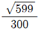
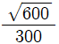
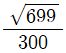
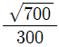
18. 지역타원체와 세계타원체 간의 3차원 좌표변환과 관련이 없는 것은?
19. 지구자기의 변화에 해당 되지 않는 것은?
20. GPS 위성으로부터 전송되는 L1 신호의 주파수는 1575.42MHz이다. 광속 c=299792458m/s일 때 L1신호 100000 파장의 거리는 얼마인가?
2과목: 응용측량
21. 중앙종거 30m, 곡선시점과 곡선종점을 연결하는 협의 길이 300.5m인 원곡선을 설치하고자 할 때 이에 적합한 곡선반지름은?
22. 클로소이드곡선(Clothoid curve)에 대한 설명 중 옳지 않은 것은?
23. 그림과 같이 AC 및 BD선 사이에 곡선을 설치하고자 한다. 그런데 그 교점에 장애물이 있어 교각을 측정하지 못하고 ∠ACD, ∠CDB 및 CD의 거리를 측정하여 다음의 결과를 얻었다. ∠ACD=150°, ∠CDB=90°, ∠CD=200m, 곡선반지름을 300m라 하면 C점에서 곡선시점까지의 거리는?
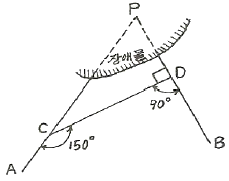
24. 길이 100m, 폭 20m의 도로를 성토하기 위한 6m 높이의 성토량은? (단, 성토경사 = 1:1.5)
25. 두 개의 수직 터널 A, B에서 추선측량을 하여 터널 내외를 연결했다. 터널 외 A, B의 좌표가 A(x=1367.54m, y=486.57m), B(x=2187.24m, y=1687.64m)이고, 터널 내 A, b의 좌표가 A(x=1367.54m, y=486.57m), B(x=2196.77m, y=1677.72m)일 때 이 터널 내외의 측선이 이루는 방위각의 차는 얼마인가?
26. 지상 및 지하시설물 등에 대한 지도 및 도면 등 제반 정보를 수치 입력하여 효율적으로 운영 관리하는 종합적인 관리체계를 무엇이라 하는가?
27. 경관 평가요인을 정향화하기 위하여 수평시각을 관측한 결과 30°≤θ≤60°의 값을 얻었다. 시설물에 대한 느낌으로 적절한 것은?
28. 터널 안에서 A점의 좌표가 (1749.0m, 1134.0m, 126.9m) B점의 좌표가 (2419.0m, 987.0m, 149.4m)일 때 A, B점을 연결하는 터널을 굴진하는 경우 이 터널의 경사처리는?
29. 완화곡선에 대한 설명 중 옳지 않은 것은?
30. 하천의 수애선에 대한 설명으로 옳지 않은 것은?
31. 철도 노선에서 곡선부를 통과하는 차량에 원심력이 발생하여 접선방향으로 탈선하려는 것을 방지하기 위해 바깥쪽 철로를 안쪽 철로보다 높이는 것을 무엇이라 하는가?
32. 반지름 10cm의 구의 표면에서 구면삼각형 ABC의 각을 측정하니 A=75°, B=66°, C=49° 이었다면 구면삼각형의 면적은?
33. 터널의 양쪽 입구 A와 B를 연결한 지상골조 측량을 하여 A(-2357.26m, -1763.26m), B(-1385.78m, -987.33m) 및 임의점 P에 대한 방위각
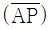
= 176° 27‘ 32“를 얻었을 때 ∠PAB는?34. 어느 지역의 택지조성을 하기 위하여 사각형 구분법에 의한 토공량을 계산한 결과 2000m3이었다. 이 토공이 택지내에서 균형을 이루려면 그 높이는 얼마로 하여야 하는가? (단, 사각형의 변의 길이는 가로, 세로가 각각 20m, 10m이고 사각형의 수는 40개임)
35. 노선의 곡선 중에서 반지름이 각기 다른 2개의 원곡선으로 구성되고 이 두곡선의 연속점에서 공통접선을 가지며 곡선중심이 공통접선에 대하여 서로 반대쪽에 있는 곡선을 무엇이라고 하는가?
36. 그림과 같은 삼각형 지역의 토량은 얼마인가? (단, 각 점에 주어진 수치는 지반고이며 m단위이고, 각 변에 주어진 거리는 수평면에 투영된 거리임.)
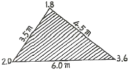
37. 확정측량에 대한 설명으로 옳은 것은?
38. 하천의 유량을 간접적으로 알아내기 위해 평균유속공식을 사용할 경우 반드시 알아야 할 사항은?
39. 표면부지에 의한 유속관측 방법에 대한 설명으로 옳지 않은 것은?
40. 하천의 심천측량을 하기 위해 그림과 같이 AB선에 직각으로 기선 AD=60m를 관측하였다. 현재 P의 위치에서 관측장비를 사용하여 ∠APD=40°를 측정하였다면 AP의 거리는?
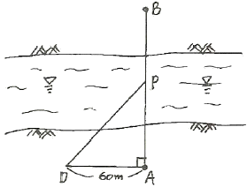
3과목: 사진측량 및 원격탐사
41. GIS에서 표준화가 필요한 이유로 가장 거리가 먼 것은?
42. 촬영 종기선의 길이와 촬영 횡기선의 길이와의 비가 4:7일 때 횡중복도가 30%였다면 종중복도는 얼마인가?
43. 벡터구조에 비해 격자구조(grid 또는 raster)가 갖는 특징으로 옳지 않은 것은?
44. 사진판독에 관한 설명으로 옳지 않은 것은?
45. 카메라의 촬영경사(I)가 2°, 초점거리(f)가 153mm로 평탄한 토지를 촬영한 공중사진이 있다. 이 사진에서 주점(m)에서 등각점(j)까지의 거리는?
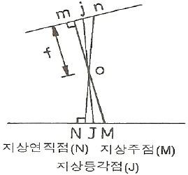
46. 도화(Plotting)의 정확도에 대한 설명으로 옳지 않은 것은?
47. GIS 공간객체 타입 중 1차원 객체 타입이 아닌 것은?
48. 상호표정에 대한 설명으로 옳은 것은?
49. 편위수정기를 이용한 편위수정(rectification)에 대한 설명으로 옳지 않은 것은?
50. 지상기준점으로 사용하기 위해 대공표지를 설치하고자 한다. 만약 항공사진기가 초광각 카메라(화각 : 120°)이고, 표정기준점 설치 위치의 주위에 높이가 10m인 건물이 있다면 건물에서 최소 몇 미터 이상 떨어진 곳에 대공표지를 설치해야 하는가?
51. 디지타이징에 의한 수치지도 제작시 발생할 수 있는 오차 유형이 아닌 것은?
52. GIS의 응용기법 중 하나로서 공간상에 나타난 연속적인 기복의 변화를 수치적으로 표현하는 방법은?
53. 지상수신소에서 사용자에게 공급하는 위성영상자료의 포맷이 아닌 것은?
54. 다음 수식은 어느 표정에 필요한 것인가?
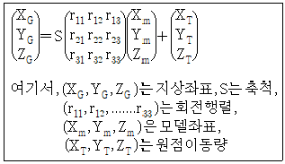
55. 평탄지를 촬영고도 1500m로 촬영한 연직사진이 있다. 두 사진 상에서 2점간의 시차차를 측정하니 4mm이었다면 이 두 점간의 비고는? (단, 카메라의 초점거리 153mm, 사진의 크기 23cm×23cm, 종중복도 60%임)
56. 촬영스트랩의 길이가 4km라고 하면 몇 매의 사진을 촬영해야 하는가? (단, 사진축척 1:10000, 종중복도 60%, 사진크기 21cm×21cm)
57. 항공사진 상에서 축척을 구하는데 필요하지 않은 것은?
58. 편위수정법에 의하여 1:5000의 지형도 측정을 계획하고 있다. 편위수정을 평면기준점을 기준으로 하여 실시하였을 때 허용되는 최대 비고(표고차)는? (단, 초점거리는 150mm, 사진축척은 1:1000, 완성도상(1:5000)에서의 허용오차는 0.3mm이며, 도화에 이용될 지역은 1:10000의 사진에서 주점으로부터 3cm의 범위이다.)
59. 지리정보시스템의 공간분석기능에 대한 설명 중 관계가 옳은 것은?
60. 센서의 분류 중에 수동방식의 센서가 아닌 것은?
4과목: 지리정보시스템
61. 삼각망 구성에 있어서 가장 정밀도가 높은 삼각망은?
62. 수준측량시 중간점이 많을 경우 가장 많이 사용하는 야장기입법은?
63. 어떤 기선을 4구간으로 나누어 측량한 결과가 다음과 같을 때 전체 거리에 대한 확률오차는?
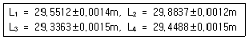
64. 기선 D=20m, 수평각 α=80°, β=70°, 연직각 V=40°를 측정하였다. 기점 P의 높이 H는? (단, A, B, C점은 동일 평면인 지상에 있고 P점은 목표점이다.)
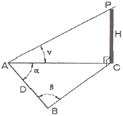
65. 실제 두 점 사이의 거리 40m가 도상에 2mm로서 표시될 때 축척은?
66. 트래버스측량에서 거리와 각의 관측정확도를 균등하게 유지하려고 한다. 600m의 거리를 ±(5mm+10ppm×L)[mm]의 EDM으로 측량한 경우에 필요한 각의 오차한계는? (단, L은 [km])
67. 다음 그림과 같은 결합트래버스의 측각오차식은? (단, [a] : 측각(a1~an)의 총합)
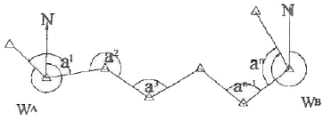
68. 다음 오차에 대한 설명 중 옳지 않은 것은?
69. 지형을 지물과 지모로 분류할 때 지모에 해당되는 것은?
70. 측량의 오차를 최소화하기 위한 가장 좋은 방법은?
71. 아래 그림과 같이 관측된 거리를 최소제곱법으로 조정하기 위한 관측방정식으로 옳은 것은? (단, 단위는 m)
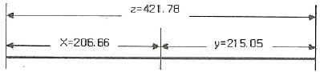
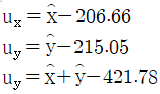
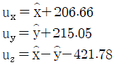
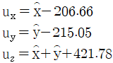
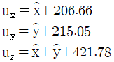
72. 수준측량의 활용분야에 해당하지 않는 것은?
73. 다각노선의 각 절점에서 기계점의 설치오차는 없고 목표점의 설치 오차가 11mm, 방향관측오차를 최대 10“로 한다면 절점 간의 거리는 최소 몇m 이상이어야 하는가? (단, 각 절점간의 거리는 동일한 것으로 한다.)
74. 직사각형인 지역의 각 변을 측량하여 a=17.43±0.01m, b=10.72±0.⑤m의 값을 얻었다. 면적오차는 얼마인가?
75. 다각측량에서 1각의 오차가 10“인 5개의 각이 있을 경웅 각 오차의 총합은?
76. 다음의 인공위성 측량 시스템 중 그 성격이 다른 하나는?
77. 임의 지점 P1의 좌표가 (-2000m, 1000m)이고, 다른 지점 P2의 좌표가 (-1250m, 2299m)일 때
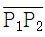
의 방위각은?78. 아래의 축척별 등고선 간격으로 옳지 않은 것은?
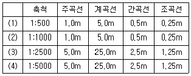
79. 수준측량의 관측값으로부터 표고계산을 한 결과이다. 각 측점의 표고 중 틀리게 계산된 측점은? (단, 측점 No.1의 표고는 10.000m 임)
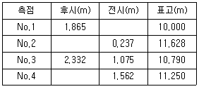
80. 삼각 및 삼변측량에 대한 설명으로 옳지 않은 것은?
5과목: 측량학
81. 측량기준점에서 국가기준점에 해당되지 않는 점은?
82. 측량업의 등록시 특급기술자가 1명 이상 필요한 측량업은?
83. 지도도식 규칙에 따라 외도곽 바깥쪽에 표시되는 것으로 옳지 않은 것은?
84. 일반측량을 시행하는데 기초로 할 수 없는 자료는?
85. 기본측량성과를 국외로 반출이 불가능한 경우는?
86. 공공측량성과심사 수탁기관은 성과심사의 신청접수일로부터 통상적으로 며칠이내에 심사결과를 통지해야 하는가?
87. 측량의 기준에 관한 설명 중 틀린 것은?
88. 각 좌표에서의 직각좌표를 TM(Transverse Mercator, 횡당 머레이터) 방법으로 표시할 때의 조건으로 옳지 않은 것은?
89. 지명 및 해양지명의 제정, 변경사항을 심의ㆍ의결하여 결정하는 위원회는?
90. 토털 스테이션에 대한 성능검사의 주기로 옳은 것은?
91. 지리학적 경위도, 직각좌표, 지구중심 직교좌표, 높이 및 중력 측정의 기준으로 사용하기 위하여 위성기준점, 수준점 및 중력점을 기초로 정한 기준점은?
92. 측량ㆍ수로조사 및 지적에 관한 법률상 용어의 정의로 옳은 것은?
93. 공공측량의 실시공고에 포함되어야 할 사항이 아닌 것은?
94. 기본측량의 실시공고는 해당 시ㆍ도 또는 특별자치도의 게시판 및 인터넷 홈페이지에 최소 며칠 이상 게시하여야 하는가?
95. 측량ㆍ수로조사 및 지적에 관한 법률의 제정 목적에 해당되지 않는 것은?
96. 일반측량업자가 할 수 있는 공공측량의 설계한정금액은 얼마인가?
97. 측량업종은 크게 측지측량업, 지적측량업, 그 밖에 항공촬영, 지도제작 등 대통령령으로 정하는 업종으로 구분할 수 있다. 다음 중 항공촬영, 지도제작 등 대통령령으로 정하는 업종에 해당되지 않는 것은?
98. 1:25000 및 1:50000 지형도 도식적용규정에서 지류의 표시원칙으로 잘못된 것은?
99. 측량ㆍ수로조사 및 지적에 관한 법률의 벌칙 중 3년 이하의 징역 또는 3000만원 이하의 벌금에 처하는 경우는?
100. 국토해양부장관은 측량기본계획을 몇 년마다 수립하여야 하는가?